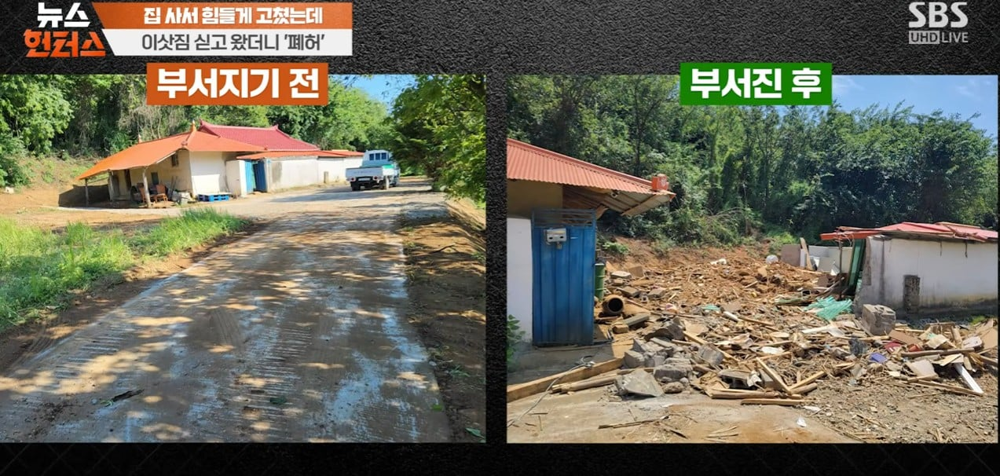
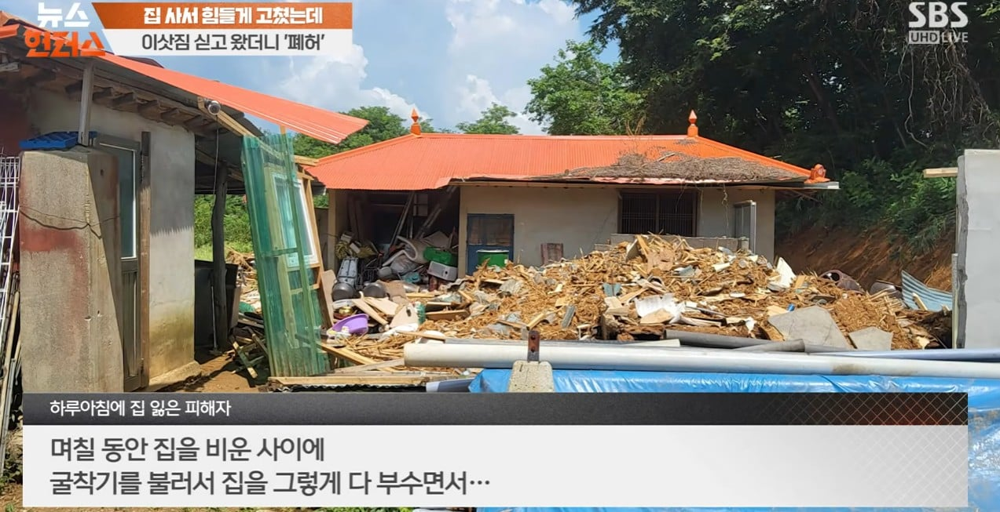
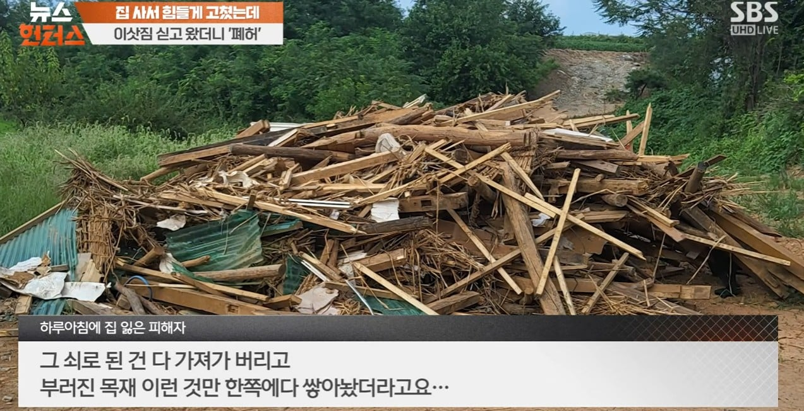
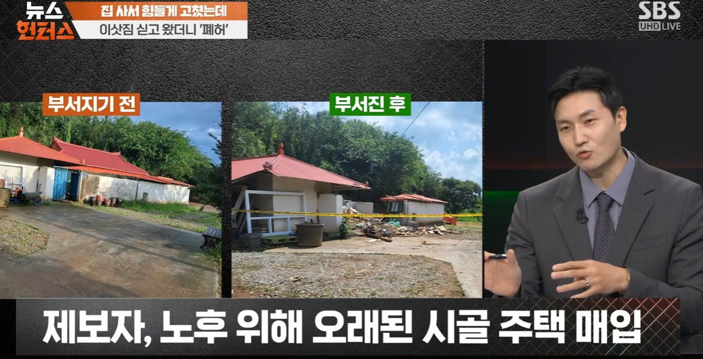
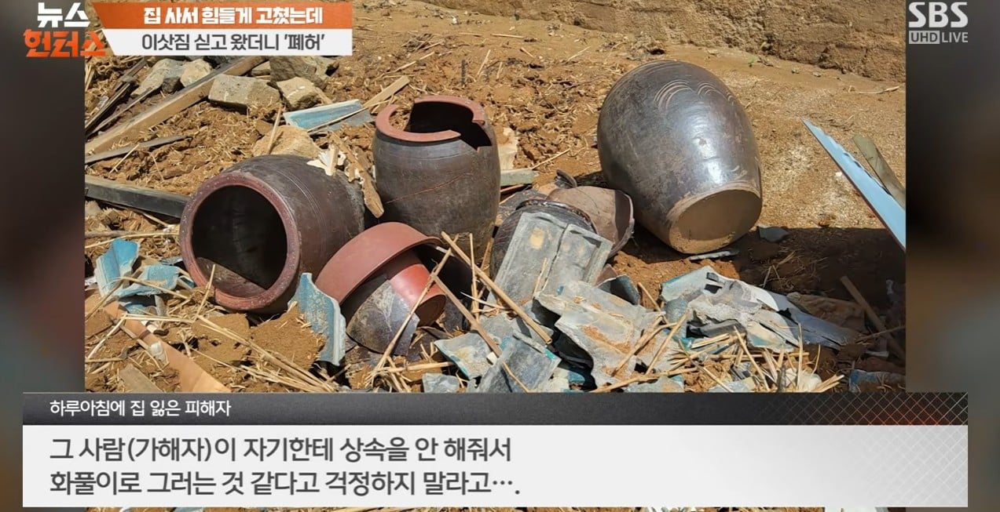
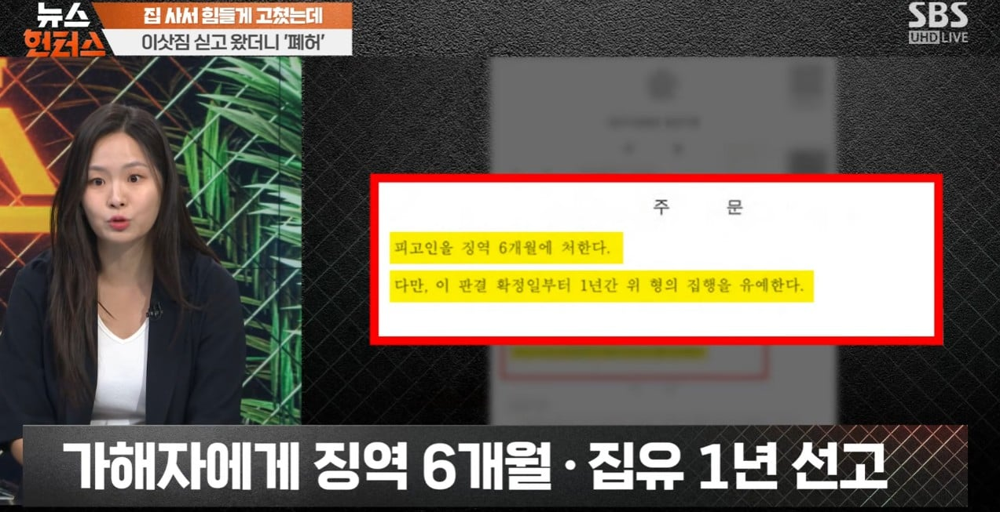
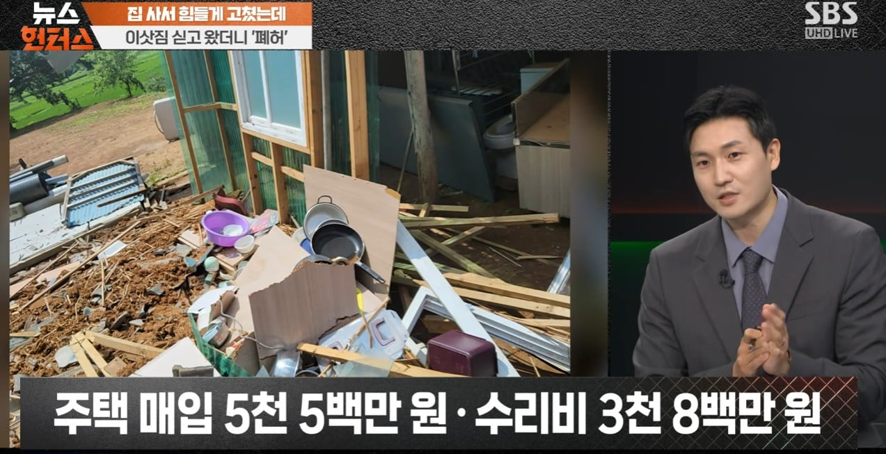
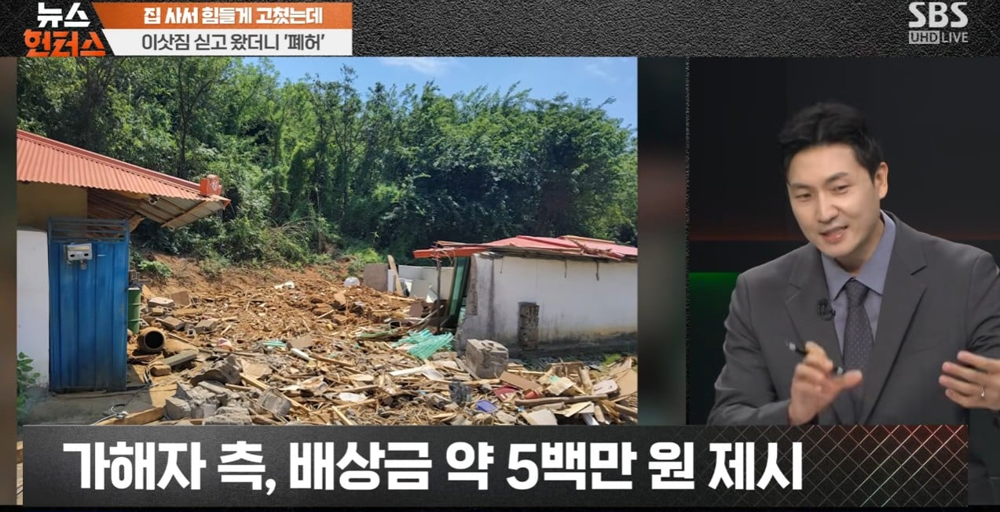
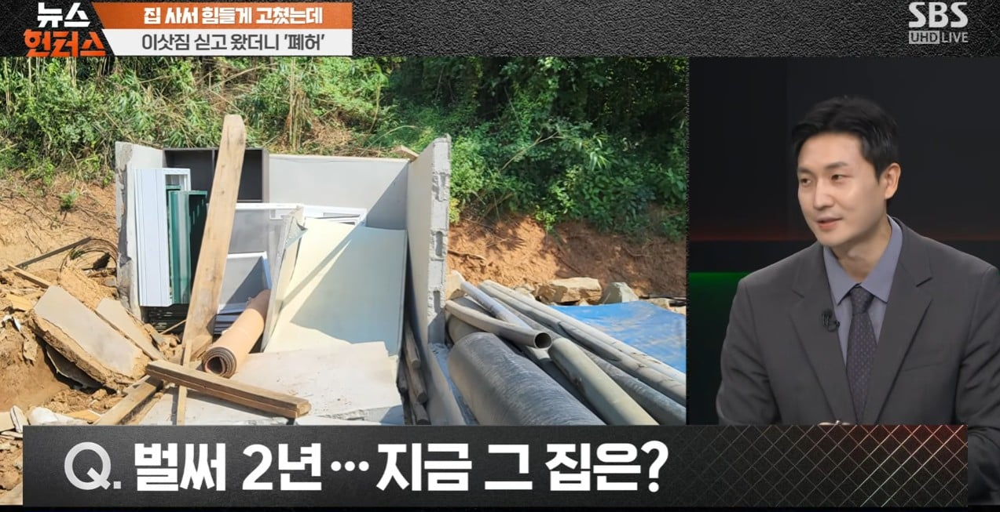

집행유예는 그냥 아무 처벌 안 받았다는 이야기임









집행유예는 그냥 아무 처벌 안 받았다는 이야기임
그럼 보복으로 더 쌔게 형이 나옴
자력구제는 어지간한 법치국가는 상당히 강하게 처벌함 내버려두면 사회가 개판되거든
사회 개판 만드는데 일조한 판결이노
어허 감히 판사의 판결에 불만을 품고 자력구제를해? 이놈 징역 낭낭하게 넣어줘라~ 땅땅땅!
딱 봐도 일반적인 직장이나 사회생활 안 할 사람으로 보이는데
집유는 정말 아무 처벌도 안 받았는거랑 다를게 없지 ㅋㅋㅋ
대한민국 법이 저렇더라.
대한민국 법은 피해자 구제보단 가해자 선처에 초점이 맞쳐져있음.
얼만큼 범죄자들을 용서해주고 감경해주까 이런것만 초점에 맞춰져있지.. 피해자 구제는 신경도 안씀.
그래서 10원짜리 하나도 함부러 빌려주지말고
길가다가 시비걸리면 그냥 피해야지
깽값생각하다간 깽값은 무슨.. 본인만 다치고 끝나게됨.
형법은 그게 맞긴 한데... 민법에서 법이 피해자를 안도와주는게 크지 형법에서 피해자로 판결되면 민사 쪽까지 재산 파악 후 재판 및 처분까지 직결되면 좋을텐데
민사재판도 1년~2년 승소 해봤자 추심은 별개임..
민사 추심도 채무자(범죄자) 보호에 관한 법이 더 많음..
채권자(피해자)는 고작 할 수 있는데 채무불이행자 명부등록( 구, 신용불량자 명부) 근데 이것도 이제 불이익없음. 이거 등록되면 신용카드 발급 못했는데, 요즘엔 상과없이 다함.....
10년동안 추심비용만 누적되고.. 돈 없다고 배째라하면 결국 할 수없음. 5년인가 10년마다 채권 연장밖에는
이럼 누가 법 지키냐? 법이 피해자인 나를 안지키고 가해자만 지키는데?
뉘우치는 가해자는 없는데 교화만 부르짖는 우리나라 법 ㅋㅋㅋ
개드립에도 교화 좋아하는 애들 많긴 해 ㅋㅋㅋ
판사 집주소랑 이름을 알고 싶어지는 판결이긴 하네
나는 가해자가 아니라 판사님 집을 똑같이 밀어주고 싶다 ㅅㅂ
음주운전이 있잖아
실수로 술 마시고 운전하면 되지
절대 고의가 아니라 우연히 상대방 박으면 법원도 집행유예 해줌
진짜 언제는가는 판사한테 칼찌하는 사람도 나올꺼같다
칼은 아니지만 ..이미 있긴 함ㅋㅋㅋ
해외 드라마 중에 판새 사적제재 하는거 나옴
부러진 화살을 잊은거니
어차피 자력구제해도 징역때릴 개병신법이면 그냥 쑤셔버리고 징역가는게 나은거아님?ㅋㅋ
집행유예는 아무처벌도 안받았다는 아니고
진짜 문제는 민사 진행이 오래걸려서 그럼
그동안의 구제책이 없어서 그렇고
개인적으로 집유에 가해자가 피해회복에 힘 쓰고 미이행시 취소되는 법이라도 있음 좋을 거 같은데 그런 건 없으니까
지금 우리나라는 판사가 제일 문제가 심각한거 같음
다른 물건도 아니고 집을 부순건 일반적인 재물손괴보다 더 강하게 처벌해야되는 거 아닌가
가해자가 노인이라 징역 실형은 안준건가
문제 없지않나?
집 부순걸로 감방가나? 집유로도 흔히말하는 빨간줄 그인거 같고
어차피 민사소송해서 배상받으면 되는거고
물론 고생한값까지 모두 보상받긴 힘들겠지만
집유를 안줬으면 배상합의가 훨씬 쉬웠을듯
민사합의한다고 이미 끝난 형사가 달라지는 건 아니라서 이미 감방들어간 놈이 그걸로 합의 할 이유가 없음
반대도 마찬가지고
무슨 소리야 2심에서 합의여부로 감형될 수도 있는데
처벌이 세면 그게 맞는데 6개월이면 2심 진행되는 사이에 이미 반은 보낼 거라 합의할 이유가 없지않나 그냥 보내고 말지
엄근진 구치소 만화있지? 그거1심에 법정구속 합의보고 2심에서 집행유예로 나온거여ㅋㅋㅋ
판사 머리통 굴착기로 함 밀었나ㅋㅋ
이것도 교화되냐 ㅋㅋ
판새가 사회를 좀먹음 AI로 대체하는게 맞음 근데 시발 결국 AI도 좃같은 한국 법에 의거해서 판결 내릴거잖아
민사걸면 다 받지않나
우리나라법이 그렇게 좋은편이 아님
그럼 어떻게 돼야 좋은 법인거야?
판결만 받을거 같노
진짜 돈없으면 받을것도 없음
저짓한 새끼랑 판사새끼랑 둘 다 배때지에 칼이 들어가면 후회하겠지
한국법 ㄹㅇ 병신이야
가해자만 존나 챙겨줌
집을 구매했던 가격이 5500만원인데, 그걸 통째로 날리게 생겼는데 500만원 제시는 니미.....
우리나라가 처벌이 되게고무줄같구나
방금 유튜브에서 성범죄는 진짜 얄짤없이 조지려고하는거 보고왔는데 이건또
성범죄는 어딜! 6974등 시민이 0등시민한테 폐를 끼쳐? 이래서 엄벌이고
집유는 형사고 저걸기반으로 민사 조져야하는데 5백제시? 조까넼ㅋㅋㅋ 돈없다 배째라하면 배째주는 사이다엔딩 기원
형사랑 민사 구분을 좀 하자.
손해배상 받는건 민사로 해결해야지.
보상 못받아서
열받으면 상대방 집 똑같이 부수면
형량 더 받겠지?
그럼 피해자도 걍 굴삭기로 가해자 집 밀어버리면 되겠네?